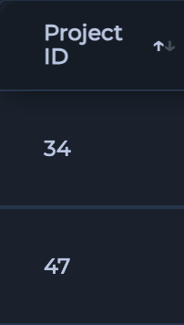
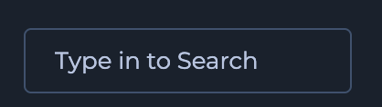
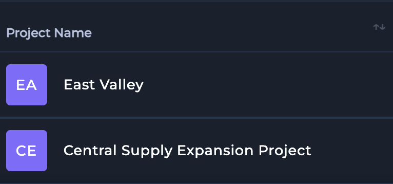
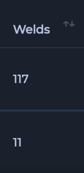
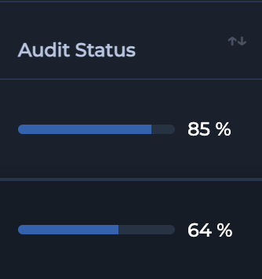
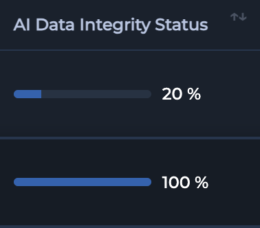
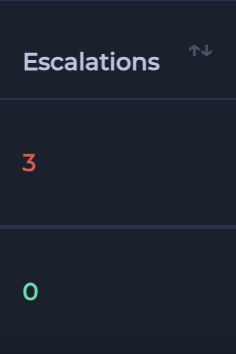
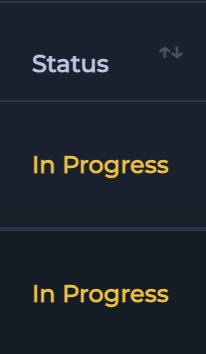
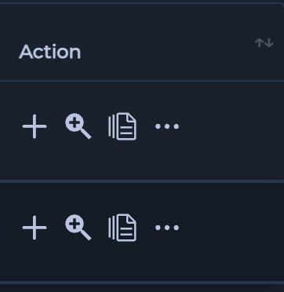

2.2 Navigating & Managing Data
2.2.1 The Projects Page: Your Central Hub
The Projects page in Orbix serves as your central repository for all projects associated with your company. This dashboard provides a comprehensive overview of each project, displaying critical information and enabling various actions.
2.2.1.1 Understanding the Project Table
{kind=link}
| Number | Name | Function | Component |
|---|---|---|---|
| 1 | Project ID Column | Shows the Project ID used by Orbix to track information on project |  |
| 2 | Search Input | Input to allow user to perform a search on all their projects within a single company |  |
| 3 | Project Name Column | Shows name of project given by user |  |
| 4 | Welds Column | Shows the number of welds uploaded to a given project |  |
| 5 | Audit Status Column | Shows the percentage of welds that have been audited and given an accepted status |  |
| 6 | AI Data Integrity Status Column | Shows the percentage of welds that have passed the AI Data Integrity Audit |  |
| 7 | Excalations Column | Shows the number of Welds that the AI Data Integrity System has flagged as neeeding to be addressed |  |
| 8 | Status Column | Shows the current status of the project |  |
| 9 | Action Column | Shows the user the actions that they are able to perform on a certain project |  |
{kind=link}
{kind=link}
{kind=link}
{kind=link}
{kind=link}
{kind=link}
{kind=link}
{kind=link}
{kind=link}
2.2.1.2 Project Action Icons
From the Projects page, you can perform several critical actions to manage your projects effectively:
{kind=link}
{kind=link}
{kind=link}
{kind=link}
{kind=link}
{kind=link}
{kind=link}
{kind=link}
2.2.2 The Main Data Manager
The Main Data Manager is your primary interface within Orbix for interacting with individual welds and their corresponding DICONDE files inside a specific project. It provides powerful tools for searching, viewing, and managing every inspection record.
2.2.2.1 Interface Overview
The Main Data Manager is designed for efficient data navigation and management. The interface is centered around three main components: a comprehensive search bar for granular queries, intuitive filters for batch searching, and a detailed data table that lists every weld.
{kind=link}
[Screenshot: The Main Data Manager interface showing the search bar, filters, and the main data table.]
2.2.2.2 Understanding the Data Table
The data table lists each individual weld as a unique row, providing critical information in distinct columns. Understanding these columns is key to managing your inspection workflow.
- ID: The unique Inspection ID for the weld. Clicking on the ID opens the Inspection History, providing a complete traceability log of every action and status change performed on that specific weld.
- Batch ID: The identifier for the batch the weld was uploaded in. Clicking on the Batch ID takes you to the manage data page for that entire batch.
- Weld ID: The specific identifier for the physical weld.
- Radiographer: The name of the technician who performed the inspection. Clicking on a radiographer's name will navigate you to their certifications page within the Compliance Hub.
- Tags: Any custom tags added for categorization or filtering.
- Data Template Used: The specific data template applied to the inspection.
- Inspection Status: The finding as determined by the technician (e.g., Pass, Fail, Indication).
- Audit Status: The final finding as determined by the auditor. This column allows you to directly compare the initial technician finding with the final audit decision.
- Actions: A menu of available operations for each weld.
{kind=link}
[Screenshot: The Main Data Manager data table with columns like Inspection Status, Audit Status, and the clickable ID and Radiographer cells highlighted.]
2.2.2.3 Powerful Search Tools
Locating specific data within a large project is simple with the Main Data Manager's robust search capabilities.
Comprehensive Search
Use the main search bar to perform a Comprehensive Search across any field in the data table. You can instantly find data by Inspection ID, Weld ID, radiographer name, or even a specific filename associated with the DICONDE data. Simply type your query into the search bar and the table will update in real-time.
{kind=link}
Search by Batch
To find all data associated with a specific upload, use the intuitive Search by Batch dropdown filters.
- Select a Date or Technician from the dropdown menus.
- The data table will display every weld included in the selected batch.
- After selecting a batch, an Edit icon appears next to the filter. Click this icon to navigate to the manage data page for that batch, where you can upload additional DICONDE files or reader sheets.
{kind=link}
2.2.2.4 Actions
You can perform several actions directly on individual welds or batches from the data table.
From the Actions column on any given row, you can:
- View DICONDE file: Open the viewer for the associated DICONDE file.
- Audit Individual Weld: Go directly to the audit page for that weld.
- Edit or Replace DICONDE files: Modify or substitute the data files for that weld.
- Download Single Weld: Download the complete data package for a single Inspection ID.
- Delete Weld: Remove the weld record from the project.